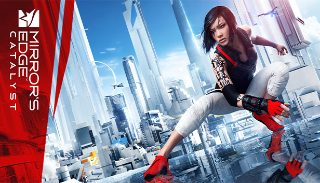

Developed by DICE and published by Electronic Arts. It was released for Xbox 360 and PlayStation 3 in 2008, and for Microsoft Windows in 2009. Set in a near-future city, the game follows the story of Faith Connors, an underground parkour courier who transmits messages while evading government surveillance. To progress through the game, the player must control Faith from a first-person perspective and complete a series of levels that involve performing a sequence of acrobatic manoeuvres, including jumping between rooftops, running across walls, and sliding down zip lines.
Mirror's Edge is an action-adventure platform game where the player must control the protagonist, Faith Connors, from a first-person perspective and navigate a city. To progress through the game and its storyline, the player needs to complete a series of levels that involve performing a linear sequence of acrobatic manoeuvres. These include jumping between rooftops, running across walls, climbing pipes, walking along ledges, sliding down zip lines, and getting past opponents controlled by the game's artificial intelligence. Faith's arms, legs, and torso are prominent and their visibility is used to convey her movement and interactions with the environment. Her momentum is an important aspect of the gameplay, as preserving it through multiple obstacles allows the player to run faster, jump farther and climb higher. To help players chain moves seamlessly, the game employs a navigation system, called Runner Vision, which turns certain objects in a bold red color as Faith approaches them, allowing the player to instantly recognize paths and escape routes.
Although the player can perform melee attacks and disarm opponents, using weapons is generally discouraged as they slow Faith down and hinder her acrobatic abilities. For example, carrying a weapon that is heavier than a pistol prevents the player from being able to jump and grab ledges. Weapons have a finite magazine and must be discarded when they run out of ammunition. If Faith has preserved enough momentum, the player may use an ability called Reaction Time, which temporarily slows the gameplay down and allows the player to time their next move. Faith has a certain amount of health which automatically regenerates when she does not take damage for a brief period. If Faith falls off a significantly high position or her health is fully depleted, the player must start the level again from the latest checkpoint. In each level, the player may also find and collect three hidden yellow bags. These encourage the player to explore the game and unlock achievements.
In addition to the game's story mode, Mirror's Edge features a time trial mode where the player must complete courses as fast as possible. Each course is divided into multiple sections and has three qualifying times to beat. Although the first courses are unlocked as the player progresses through the story mode, additional courses can be unlocked by beating qualifying times. Records can be uploaded to online leaderboards, where the player can compare their performance with others. The player may also download recordings of other players, called Ghosts, to show them the path they took through a course and help them improve their records. Additional achievements can be unlocked by reaching certain milestones.
Developed by the Swedish company DICE as part of an effort to create something fresh and interesting, anticipating a need to diversify away from the successful Battlefield franchise the studio was known for. The game was conceived in July 2006, when the studio decided to create a first-person game that would not be like a traditional first-person shooter, a genre that was considered very crowded at the time. Because first-person shooters typically focus on weapons and technology, the studio wanted Mirror's Edge to focus on the player character and their physicality. Originally, the development team experimented with the player being able to drive vehicles, but the idea was ultimately dropped because they felt it would break the flow of the game. The game's protagonist emerged from a sketch illustrating an athletic female hacker, who art director Johannes Söderqvist felt suited the game very well. He explained that he was interested in a strong female character that would appeal to both women and men, and who became a hero not because of high-tech weapons, but because of her physical abilities.
Creating all the first-person animations proved to be an ambitious task, but it was considered essential to help orient players in the game world. The game has hundreds of first-person animations and simple moves like using a ladder has over 40 animations alone. These include interactions such as jumping into it from multiple positions, climbing it up or down, or hanging on it with one hand. Although the game has a believable first-person perspective, it is not meant to be a simulation. For example, the player is able to stop quickly after a full sprint because the development team felt that keeping the inertia would make the gameplay irritating. The only information that is visible in the game's heads-up display is a small reticle in the center of the screen, which was added to lessen the simulation sickness associated with the free movement of the camera in first-person view.
Mirror's Edge deliberately makes use of strong primary colors, with outdoor environments predominantly featuring white and distinctively lacking in green. According to senior producer Owen O'Brien, this stylistic choice grew out of the gameplay, as it allows the player to focus on the Runner Vision guidance. It also serves as a health meter because the colors become less saturated as Faith starts to take damage.
The game's working title was "Project Faith" until it was changed to its current one in mid-2007, suggesting that the game's city is a mirror to its inhabitants. Writer Rhianna Pratchett, who was hired a year and a half before the game was released, described the society portrayed in the game as somewhere between an anti-utopia and a nanny state, stating that the game explores the contrast between citizens who give up their personal freedom for a comfortable life and those who prefer to live on the edge freely. They chose not to give the city a proper name because it was considered an amalgamation of many different cities, blending both East and West aesthetics. To ensure there was a good flow between the player and the game world, the score was designed to be very interactive and different parts transition seamlessly. The game went gold on November 6, 2008 and took nearly two years to complete.
Mirror's Edge was first revealed to be in development when an image of Faith holding a pistol was released in June 2007. The game was formally announced by Electronic Arts at E3 in July 2007, where DICE stated that they wanted to bring innovation to established first-person mechanics. A video featuring in-game footage was presented at the Game Developers Conference in February 2008, while a playable demonstration of the game was showcased at E3 in July 2008. At that year's E3 Game Critics Awards, Mirror's Edge won Best Original Game. New in-game footage showing a portion of the game's third level was subsequently presented at the Games Convention in Leipzig, Germany in August 2008. To stimulate interest in the game's universe, Electronic Arts partnered with WildStorm to produce a six-issue comic book adaptation drawn by artist Matthew Dow Smith and written by Pratchett. A demo comprising a small portion of the game was released on the PlayStation Network and Xbox Live services in October 2008. If the game was pre-ordered at certain retailers, buyers could gain access to a time trial portion of the demo and get a Mirror's Edge T-shirt by Fenchurch.
Mirror's Edge was first released for the PlayStation 3 and Xbox 360 consoles in North America on November 11, 2008, followed by a European release on November 14, 2008. Alongside the standard edition, a collector's edition, which included a red bag manufactured by Timbuk2, was made available for purchase. A remix album, Still Alive: The Remixes, featuring the Mirror's Edge theme song "Still Alive", was also released. A Microsoft Windows version of the game was released in North America on January 13, 2009, and in Europe on January 16, 2009. Unlike its console counterparts, the Microsoft Windows version supports Nvidia's PhysX technology, which improves graphical effects such as glass shattering, debris, and smoke. It also includes the SecuROM digital rights management software, unless bought on Steam.
A new downloadable map for the game's time trial mode was exclusively released on the PlayStation Store for PlayStation 3 users on January 29, 2009. Seven additional time trial maps, which take place in surreal-looking stages outside of the game's city, were released for the PlayStation 3, Xbox 360 and Microsoft Windows versions of the game on February 19, 2009. This was followed by Mirror's Edge 2D, a browser game adaptation by The Fancy Pants Adventures developer Brad Borne. A prequel to the game, also titled Mirror's Edge, was released for mobile devices in 2010.
Upon release, Mirror's Edge received generally favorable reviews according to review aggregator Metacritic. The Microsoft Windows version was considered superior to its console counterparts due to its more accurate controls and extra graphical features such as PhysX effects. Game Informer described Mirror's Edge as an inspiring and "genre-defining" game, while Computer and Video Games called it "an extraordinary and special game" stating that it takes fatigued first-person mechanics into a new and daring direction.
The game's visuals and soundtrack were praised very positively. Game Informer felt that the mix of protuberant white environments with solid primary colors creates "one of gaming's finest spectacles, and a surreal world for gamers to navigate".The Runner Vision guidance system was said to fit the game's art style, and the setting alone was considered powerful enough to make up the game's story, with The Guardian stating that Mirror's Edge is more about the environment than the people who inhabit it. Critics remarked that the game's interactive soundtrack makes Faith's runs more fluid, while sound effects such as her breathy heaves and noisy footsteps were said to enhance the sense of speed and tension. The voice acting was also highlighted, with IGN noting that characters never sound "cheesy or unbelievable".
The gameplay was praised for its responsive controls and immersive first-person perspective. Game Informer noted Faith's fluid acrobatic maneuvers, stating that the game succeeds at making the player feel like they are part of the game world. IGN editor Nate Ahearn agreed, saying that Faith's movement is accentuated by little nuances on-screen, which together "produce the best feeling of movement and momentum that I've gotten my hands on in a [video game]”. Although the game was considered to be relatively short, 1Up.com felt that the option to download Ghosts in the time trial mode adds some longevity to the game.

Although Mirror's Edge received satisfactory reviews upon release, the game has since grown in esteem and developed a passionate fanbase, reaching cult classic status. In a retrospective analysis, Eurogamer considered Mirror's Edge a brave and bold game, stating that no other game at the time tried to expand the potential of first-person action in so many directions. The publication also remarked that, when the game was first released, many people "didn't really 'get' it" because it uses the same template as that of first-person shooters. Game Informer stated that, while the game is not perfect, it "perfectly balanced innovation and entertainment", and described it as a "more grounded and plausible" platformer than the likes of Tomb Raider or Prince of Persia, mainly because it took the genre into a new perspective. Kotaku editor Luke Plunkett went so far as to call the game a masterpiece, stating that its unique architecture, colors, characters, perspective, acrobatics, and music give the game a timeless quality. The game's moderate success led DICE to develop Mirror's Edge Catalyst, a reboot that explores a new origin story for Faith. Catalyst was released in 2016 to mixed reviews.